3月, 2014
Linked Open Data チャレンジ Japan 2013 受賞結果発表（詳細版）
2014年3月25日
LODチャレンジ実行委員会
Linked Open Data チャレンジ Japan 2013 受賞結果発表のお知らせ（詳細版）
2014年3月7日、セマンティックWebコンファレンス2014 内で開催の「Linked Open Data チャレンジ Japan 2013 授賞式」において、各部門表彰、Platinumスポンサー賞、データ／基盤 提供パートナー賞、審査員特別賞の各賞の表彰を行ないました。審査員コメント、受賞作品の紹介スライド、表彰式の模様を下記の通り掲載いたします。
※受賞作品の紹介スライドが表示されない場合は，ページをリロードしてください．
■ 部門賞
[アプリケーション部門]
最優秀賞（賞金20万円）
| 作品番号 | 作品名 | 応募者名 |
| a108 | リモートでちょっと川の様子見てくる | チームFGL |
| ■審査員コメント 自然災害時における有効な情報提供という、社会的課題の解決に取り組んだ素晴らしい作品です。 災害関連のデータを地図上にマッシュアップするだけでなく、データを加工し、API化して再利用性を高めるなど、工夫が見られます。今後、本アプリが各地で活用され、見回り事故の防止に繋がることを期待し、最優秀賞に選考いたしました。 |
||
| 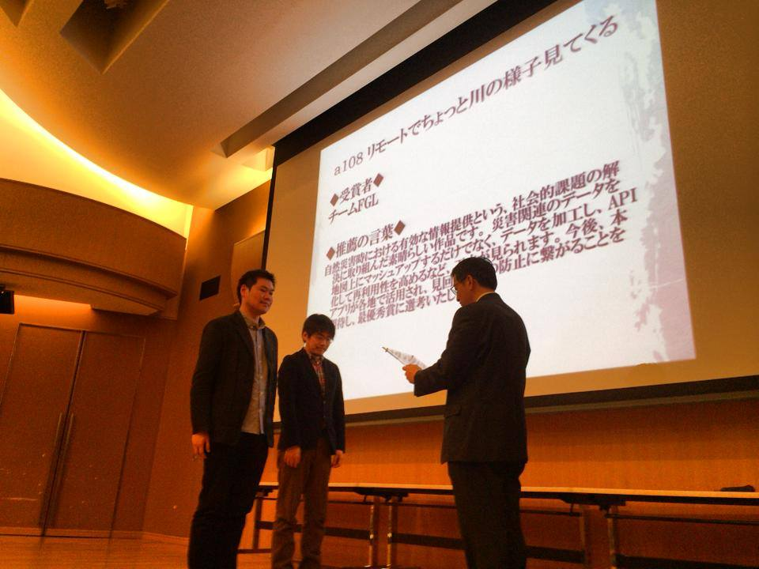 | ||
優秀賞（賞金10万円）
| 作品番号 | 作品名 | 応募者名 |
| a105 | 疾患コンパス | 古崎晃司、山縣友紀、加藤敦丈、今井健、大江和彦、溝口理一郎 |
| ■審査員コメント ライフサイエンス・医療という専門分野の作品ですが、LODの特徴である「他のデータセットとつなげる」ことによって、画像情報を含めた統合的な情報閲覧が可能となっており、 他分野へも応用可能な点を評価して優秀賞に選考いたしました。今後、本分野における知識基盤の整備と活用が、更に促進されることを期待します。 |
||
| 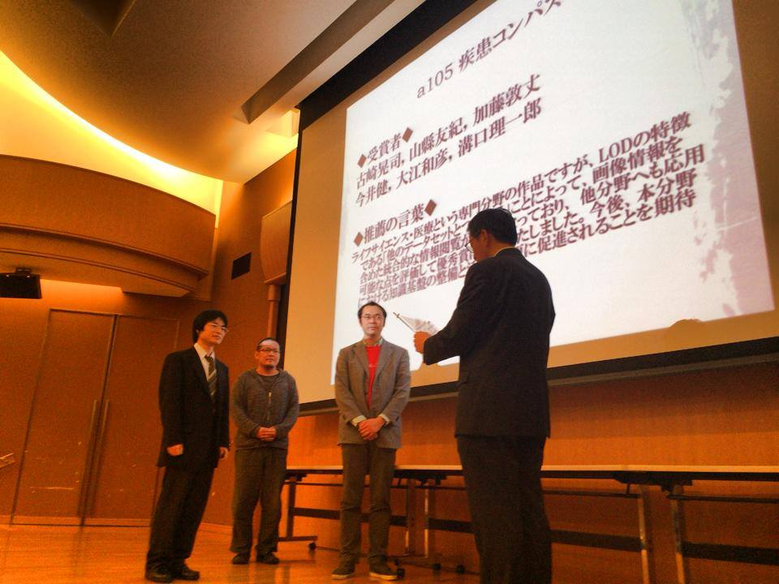 | ||
[データセット部門]
最優秀賞（賞金15万円）
| 作品番号 | 作品名 | 応募者名 |
| d028 | ねじLOD | 江上周作、清水宏泰、藤井章博 |
| ■審査員コメント 工業製品に関するLODというこれまでにない作品です。データセット公開についてはLODのお手本のようですし、CAD図面との連携といった応用例も良いです。ものづくりの分野におけるLODの可能性を示しており、今後の展開に期待します。 |
||
| 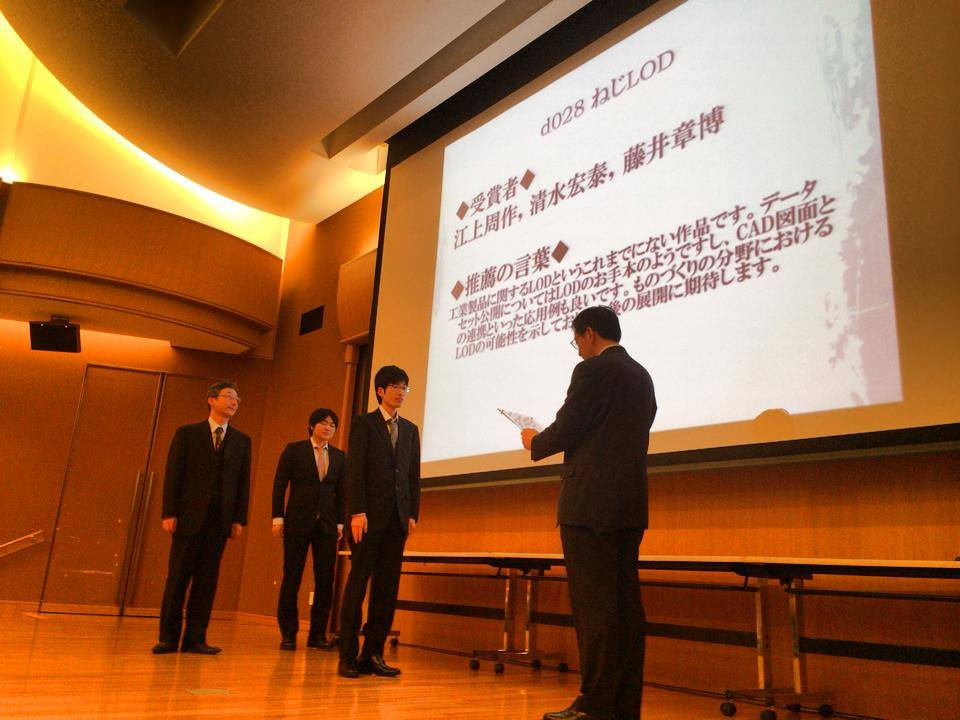 | ||
優秀賞（賞金10万円）
| 作品番号 | 作品名 | 応募者名 |
| d063 | 復興目標LOD | 白松俊、中原陽子、大囿忠親、新谷虎松 |
| ■審査員コメント 市民協働支援や社会課題共有のためのシステムが色々ある中で、震災復興に関わる目標間の関係や市民との関係等を整理してLODとして提供するというところがユニークです。重要なのは目標を整理するためのデータモデルを作成されていることで、震災復興に限らず、適用範囲は広いと考えられます。 |
||
| 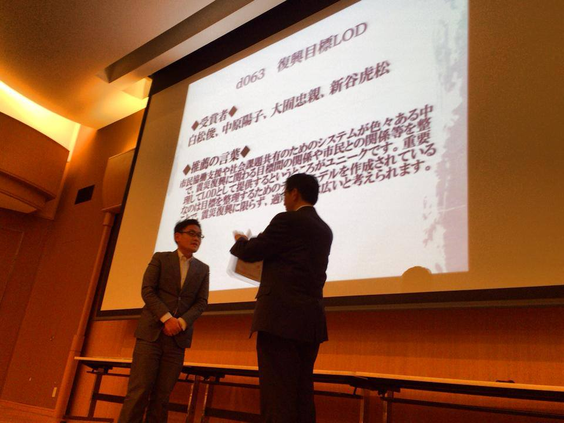 | ||
[アイディア部門]
最優秀賞（賞金10万円）
| 作品番号 | 作品名 | 応募者名 |
| i055 | メイド・イン「地元」～「地域愛」と「オープンデータ」を活用した地域活性化～ | メイド・イン「地元」開発チーム |
| ■審査員コメント 食材から選択した人の地元率を示すという明快なアイディアの中に、「地元（地域）に関する問題意識を高め具体的な行動につなげること」や、「食料の地産地消の意識を高めること」を見据えています。データやアプリにも発展しており、今後の展開も期待しています。 |
||
| 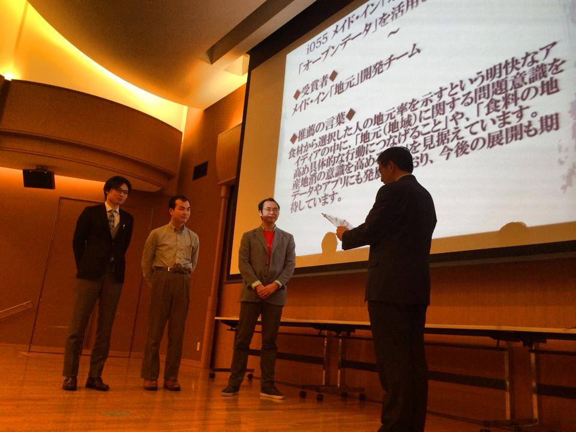 | ||
優秀賞（賞金7万円）
| 作品番号 | 作品名 | 応募者名 |
| i008 | 通勤情報を可視化することによる通勤問題解決 | オープンデータで通勤問題解決プロジェクト（仮称） 木田和海、大林勇人、板垣真太郎、小副川健、浅野優、年岡晃一 |
| ■審査員コメント 統計データ、公共データ、観測データをLODとして活用することで、毎日の通勤混雑の問題を解決するというコンセプトが良いです。電車内のみでなく、ホームや駅の出口などの混雑を含めた、通勤経路全体での解決を考えています。フィールドワークによるデータ作成、アプリ、ビジュアライズへ発展しています。チャレンジデーが、このような活動のきっかけになれたことが嬉しいです。 |
||
| 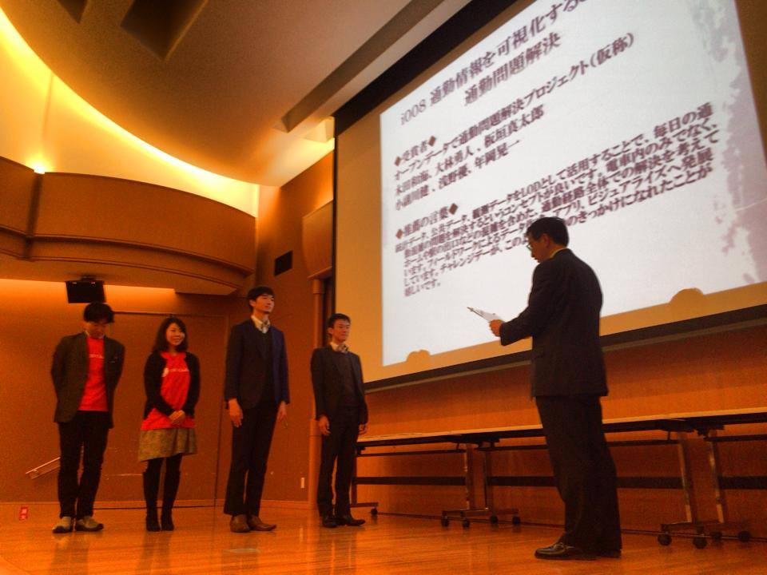 | ||
[ビジュアライゼーション部門]
最優秀賞（賞金10万円）
| 作品番号 | 作品名 | 応募者名 |
| v004 | Journalism Hacks! 2013 ? あなたはどこで人生の最期を迎えたいですか？ | データジャーナリズム・キャンプ2013 Hチーム |
| ■審査員コメント ４０万人の”死に場所難民”が発生、という大変ショッキングなコピーから始まるウェブサービス。そのコピー下に、死に場所の「自宅」「病院」「老人ホーム」が柔らかなピクトグラムで表され、クリックすると、現在の”死に場所”を円グラフ、続いてその経年変化を折れ線グラフで表現し、自分の居住県を選択すると、各県保健局の項目に飛ぶなど、使用図形の緩急及び導線の作り方が絶妙です。 |
||
| 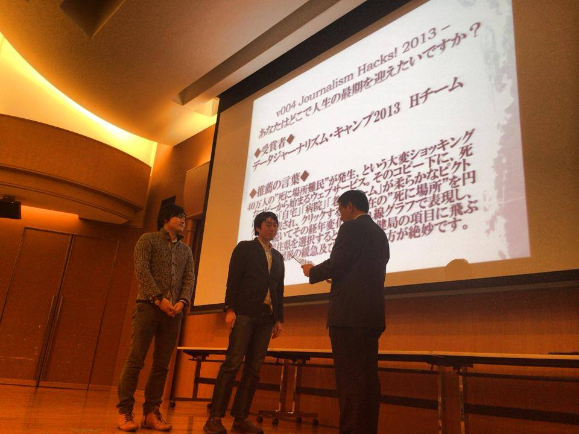 | ||
優秀賞（賞金7万円）
| 作品番号 | 作品名 | 応募者名 |
| v017 | レシピの材料の可視化 | 高野克己 |
| ■審査員コメント レシピデータを可視化するという着目点が非常にユニークな作品です。料理に使われている材料の種類・分量を図形の色・大きさで表すことで、レシピ同士の比較を容易にした点がビジュアライゼーションとして優れています。また、本作品では横手市から応募されたデータセットが用いられており、応募作品をつなげた点も評価させて頂きました。今後、同様の方法で食品の栄養成分データ等を可視化することで食事管理にも応用できるのではないかと期待しております。 |
||
| 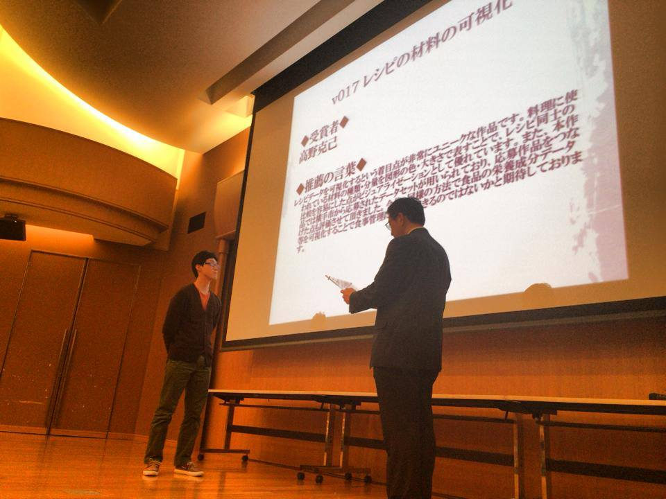 | ||
[基盤技術部門]
最優秀賞（賞金15万円）
| 作品番号 | 作品名 | 応募者名 |
| b011 | GeoNLP | GeoNLP開発チーム（代表：北本朝展） |
| ■審査員コメント 文章から地名抽出、曖昧性解消、地図化、そしてオープンデータとしての共有という一連の過程をサポートするサービスです。オープン化した地名データをLODとして活用するためのSPARQLエンドポイントなども整備されています。これら一連のサービスは、地名情報をLOD化し、様々なアプリケーション開発に利用するための基盤技術としての活用が期待されるため、最優秀賞に値すると評価されました。 |
||
| 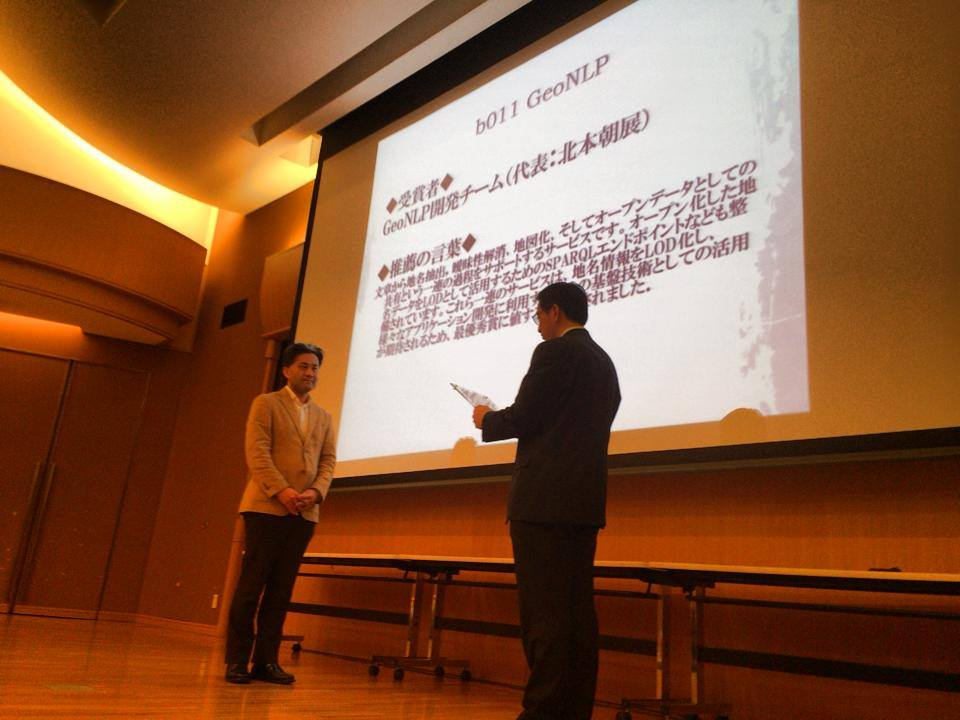 | ||
優秀賞（賞金10万円）
| 作品番号 | 作品名 | 応募者名 |
| b002 | SPARQL Timeliner | 上田洋, 小林巌生, 大林勇人, 東修作 |
| ■審査員コメント SPARQLエンドポイントのデータを利用して、データの日付情報と位置情報を簡単に可視化できるサービスです。LODの基盤技術であるSPARQLクエリの特徴を活用し、タイムラインと地図の組み合わせという、有効な可視化を誰でも簡単に利用できます。多くのイベントでも活用された、様々な利用例が公開されている点も合わせ、基盤技術部門の優秀賞に値すると評価されました。 |
||
| 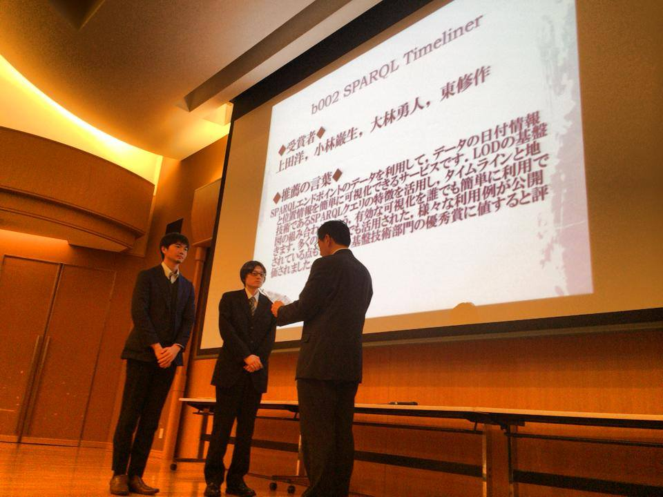 | ||
■ 審査員特別賞
公共LOD賞（賞金5万円）
| 作品番号 | 作品名 | 応募者名 |
| d002 | 横手市一般会計決算 | 福田雄輔 |
| d003 | 横手やきそば暖簾会加盟店 | 高橋智子 |
| d004 | 市報よこて記事タイトル | 高橋司 |
| d005 | 横手市文化財 | 佐藤克彦 |
| d006 | 横手市笹川スポーツ財団チャレンジデー参加実績 | 大坂智実 |
| d007 | 横手市AED設置場所 | 大坂智実 |
| d009 | 横手市子育て関連施設 | 小松健 |
| d015 | 横手市消火栓 | 鈴木稔 |
| d017 | 横手市の朝市 | 高橋智子 |
| d018 | 横手市農産物直売所 | 高橋智子 |
| d019 | 横手市にこにこレシピ | 高橋智子 |
| i002 | 笹川スポーツ財団チャレンジデーとオープンガバメント | 大坂智実 |
| i013 | アプリを利用したデータ標準化とカタログ化 | 大坂智実 |
| a006 | 横手市×混雑度 マッシュアップMAP | 大坂智実 |
| ■審査員コメント 公共LOD賞は、オープンデータの推進を積極的に行った市町村に毎年送られる伝統ある賞であり、その活動が今後の後続の自治体にとって見本となることが大いに期待される市町村に贈られます。横手市総務企画部情報政策課は職員が連携してオープンデータに取り組んでおり、そのデータを使ったアプリ開発が市民から積極的になされる実績を短期間に挙げられました。ここに同市の取り組みを高く評価致します。 |
||
| 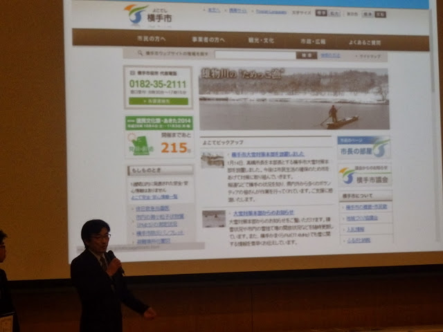 | ||
チャレンジデー賞（賞金5万円）
| 作品番号 | 作品名 | 応募者名 |
| d030 | 大阪市の施設情報・防災情報のLOD | Linked Open Dataハッカソン関西、大阪市 |
| ■審査員コメント 住民の普段の生活に密着した情報を豊富に持つ地方自治体のデータが広くオープンに、そしてLinked Dataという形で提供されたことの意義は大きいと思います。また、本データセットが、提供者の大阪市とLinked Dataに関する技術的な知識やデータそのものに関心を持つ参加者によるコラボレーションの成果であることも評価に値すると思います。今回の取り組みをきっかけとしてデータの更新や新たなデータセットの公開、そしてエンドユーザである大阪市民に有益なサービスの開発が継続して行われることを期待します。 |
||
| 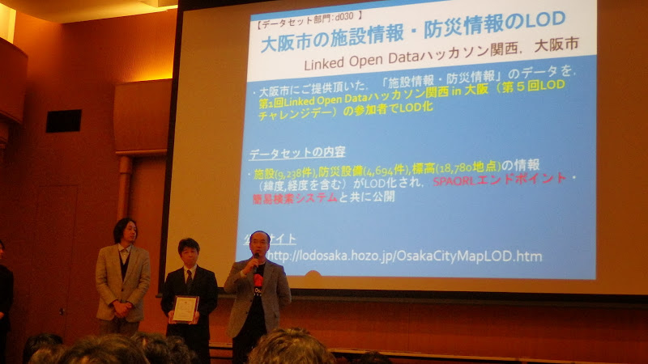 | ||
学生奨励賞（賞金5万円）
| 作品番号 | 作品名 | 応募者名 |
| d084 | カクテルレシピRDF | 竹原潤一 |
| ■審査員コメント お酒が好きな人はもちろんそうでない人も、お酒についての知識は、一度は詳しく調べてみたくなるものです。またお酒は重要な人類の文化の１つといわれています。カクテルレシピRDFはその知識をうまくＲＤＦ化し検索できるようにしたものとしてすばらしい作品だと思います。情報量の多さ、オントロジー化の分かりやすさが特に良い点だと思います。今後の知識・知恵データベースの発展する方向を示していると思います。 |
||
| 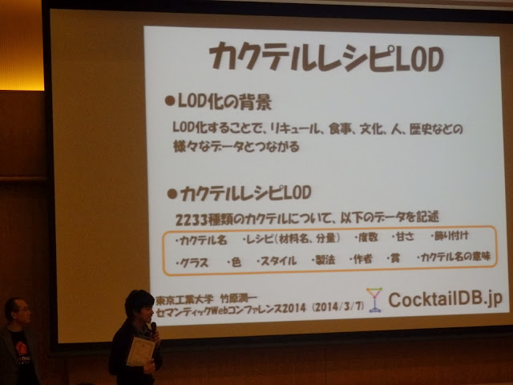 | ||
学生奨励賞（賞金5万円）
| 作品番号 | 作品名 | 応募者名 |
| d043 | 明石高専の行事予定 | 井谷武史、新井イスマイル |
| d049 | 明石高専のシラバス | 中田季利、新井イスマイル |
| d050 | 明石高専の時間割 | 泉将之、平嶋洋大、松田裕貴、新井イスマイル |
| a087 | かんたんしらばす for ANCT | 泉将之 |
| ■審査員コメント 高専初のオープンデータとして年間行事、シラバス、時間割を公開してくれました。公開したデータは自らアプリを作り利用するだけでなく、外部のアプリも作られるなど既に広がりも見られます。今後、他の高専にも広がるとデータの連携、比較など、様々なアプリが作られてくることだと思います。高専オープンデータの先駆者として、今後の活躍が期待されます。 |
||
| 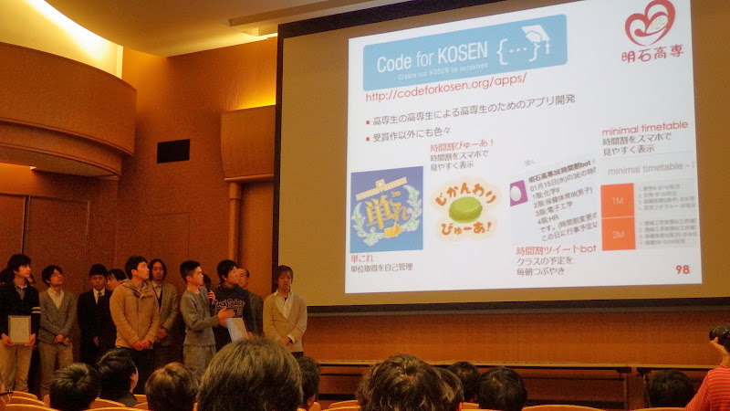 | ||
ライフサイエンス賞（賞金5万円）
| 作品番号 | 作品名 | 応募者名 |
| d064 | UTProt RDF Platform: ~ タンパク質の機能と構造のためのSPARQLエンドポイント集 ~ | 込山悠介, 番野雅城, 鑓水優行, 清水謙多郎 |
| d065 | UTProt Image: ~ アプリや教材として使える生体高分子画像データベース ~ | 鑓水優行, 込山悠介, 清水謙多郎 |
| a095 | UTProt Galaxy: ~ 創薬のためのタンパク質のリガンド結合部位予測ツール生成パイプライン ~ | 番野雅城, 込山悠介, 清水謙多郎 |
| i043 | UTProt: ~ LODと機械学習を組み合わせた創薬のパラダイムシフト ~ | 込山悠介, 番野雅城, ガル・サード, 鑓水優行, 植木快 |
| ■審査員コメント 創薬における重要課題のひとつであるリガンドの結合部位予測に向け、構造生物学の成果データをLODとして再構成することで、更に幅広い用途に利活用できるデータベースを構築しました。ライフサイエンス分野で現在進められているRDFによるデータベースの統合化推進に大きく貢献することが今後期待されます。 |
||
| 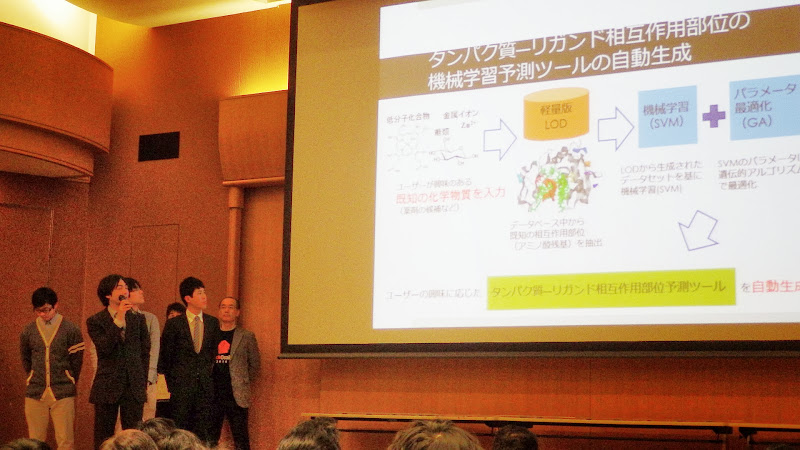 | ||
環境LOD賞（賞金5万円）
※賞金については受賞者がご辞退されています
| 作品番号 | 作品名 | 応募者名 |
| d074 | Radiation - LOD: 放射線モニタリングデータのGeoSPARQLエンドポイント | 小島 功, 田中 良夫, 中村 章人, 的野 晃整 |
| ■審査員コメント 直接は連結できない「点である放射線モニタリングポストの情報」と「面である人口統計の情報（小地域ポリゴン及びメッシュ）」について、双方の地理空間的な関係解決を行うことでデータ間のリンクを行い、SPARQLエンドポイントとして提供している点を特に評価致しました。「面」に紐づく他ドメイン情報との更なるリンク可能性を含め、今後のデータセットの拡充にも期待致します。 |
||
| 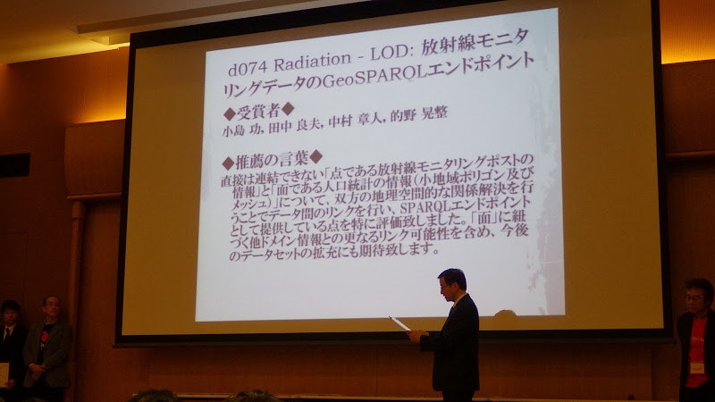 | ||
データカタログ賞（賞金5万円）
※賞金については受賞者がご辞退されています
| 作品番号 | 作品名 | 応募者名 |
| d047 | ふじのくにオープンデータカタログ | 静岡県 |
| ■審査員コメント データ公開基盤にLinkDataも活用し、Linked Open Dataとして多様なデータ公開を進めています。この自治体ならではのデータカタログを利用した作品が既に複数応募されており、本チャレンジで意図した異なる作者の作品同士が繋がる仕組み作りにも貢献頂きました。本データが観光や防災に有用なアプリなどからますます活用されることを祈念するとともに、委員会として感謝の気持ちも込めて本賞を授与したいと思います。 |
||
| 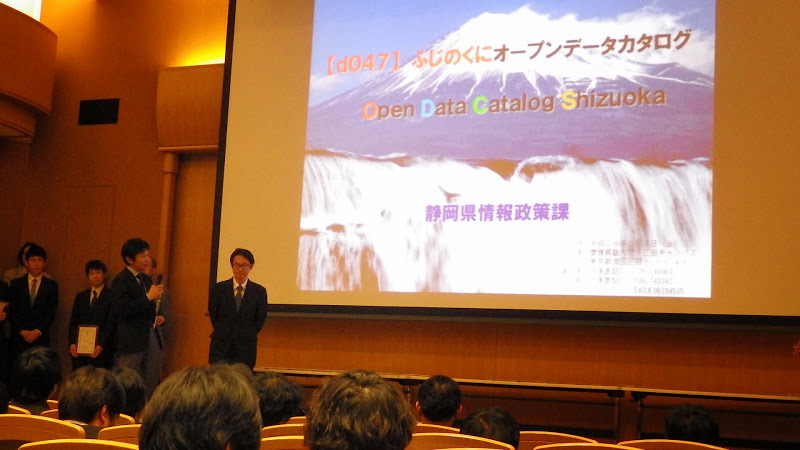 | ||
ベストファシリテータ賞（賞金5万円）
| 作品番号 | 作品名 | 応募者名 |
| i021 | Code for Japan | 関 治之 |
| ■審査員コメント 日本各地でハッカソンイベントを開催し、地域課題解決にITを活用するコミュニティの形成に尽力されています。LOD周辺技術の実社会応用を促進する上で、その社会的基盤を生むアイデアとして高く評価されました。各地のCode for X（ブリゲードコミュニティ）が繋がりながら協力して課題解決にあたっていけるよう、今後、LODの相互運用性を最大限に活用して頂ければと期待します。 |
||
| 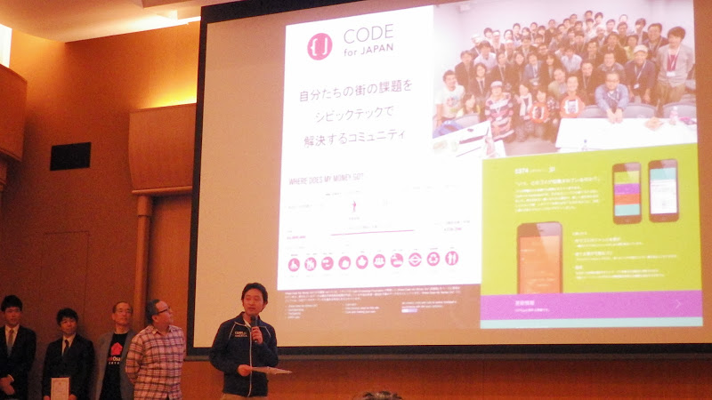 | ||
LOD推進賞（賞金5万円）
| 作品番号 | 作品名 | 応募者名 |
| d010 | 公共施設情報(建物、消防署、福祉施設、病院、等) | 小林 茂 |
| d011 | UDCT 取組情報(下水道、鉄道) | |
| d021 | 国民体育大会情報 (第45回～第68回) | |
| d069 | 近隣の医院情報(世田谷・桜) | |
| i011 | 公共施設情報(建物、消防署、福祉施設、病院、等)の活用 | |
| i012 | 意欲的な取組情報の活用 | |
| i015 | 国民体育大会情報 (第45回～第68回)の活用 | |
| i046 | 近隣の医院情報の活用 | |
| a005 | 日本の大学 | |
| a010 | 公共施設情報(世田谷地区の図書館)の閲覧 | |
| a011 | 公共施設情報(図書館、消防署、等)の都道府県別分布 | |
| a012 | 意欲的な取組情報(下水道、鉄道)の閲覧 | |
| a020 | 国民体育大会情報 (第45回～第68回)の閲覧 | |
| a098 | 近隣の医院情報(世田谷・桜)のRDF化と閲覧 | |
| a099 | 近隣の医院情報(世田谷・桜)の活用(SPARQL利用例) |
| ■審査員コメント 「LODなんて、そんなに難しくない」を証明して頂きました。投稿して頂いた作品の質もさることながら、その数に圧倒され、まさに、LODとはこうした人達が支え、発展させていくのだと感じました。今後も継続的なLODの発展に貢献に期待を込めて、選出させて頂きました。 |
||
| 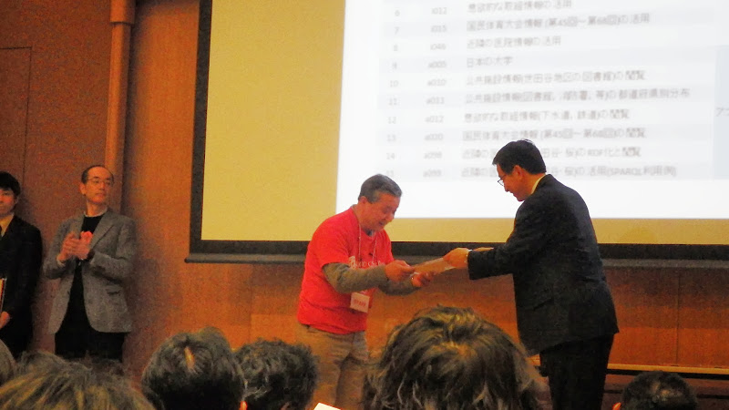 | ||
ベストプレゼンテーション賞（賞金5万円）
| 作品番号 | 作品名 | 応募者名 |
| i053 | かいけつエキスプレス | OKPU LODプロジェクト(菊井玄一郎、但馬康宏、齋藤美絵子） |
| ■審査員コメント 本作品におけるオープンデータ活用の事例は子供から大人まで、とても身近であり切実です。この着眼点が新鮮であったこと、本着眼点が強く伝わってくる高い表現力のプレゼンテーションにより受賞となりました。と同時に既に実装されている他の応募作品の機能も利用することから本作品自体の実現性も高いものとなっています。他の応募者が本アイデアを実装することもLODチャレンジらしいですが、是非ともOKPULODプロジェクトの皆さんがアイデアを実現されることを期待します。 |
||
| 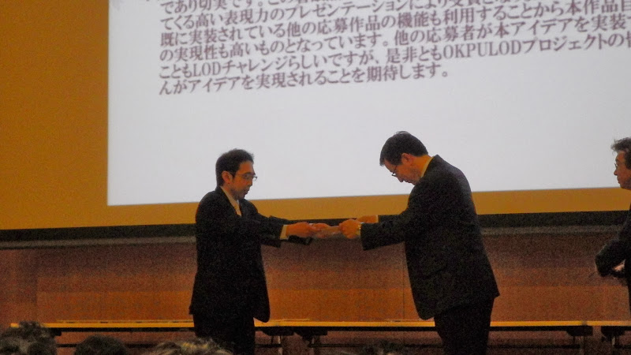 | ||
子育てライフ賞（賞金5万円）
| 作品番号 | 作品名 | 応募者名 |
| a081 | かなざわ育なび.net | 横浜市金沢区役所 （石塚 清香） |
| ■審査員コメント 自治体が持つ育児に関連する情報を、LODの仕組みを利用して集約するとともに、自ら住民向けサービスの提供まで行っており、自治体による行政情報の活用に一石を投じる作品です |
||
| 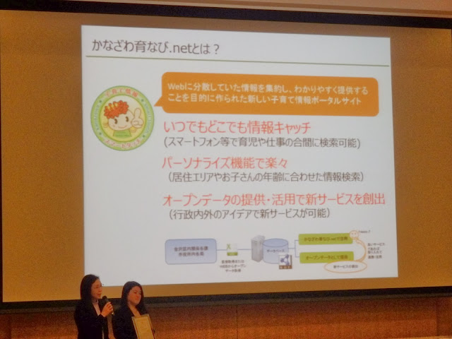 | ||
オープンデータ推進賞（賞金5万円）
| 作品番号 | 作品名 | 応募者名 |
| d038 | 福井県オープンデータライブラリ | 福井県 |
| ■審査員コメント 自治体によるオープンデータカタログ（ライブラリ）の中でも、福井県は県としてのオープンデータ情報公開とともに敦賀市、鯖江市、越前市、坂井市各市のオープンデータが紹介されています。各市のオープンデータが県と一体となって行われている先進性と、多くの市町村が今後本ホームページへ「つながり」、運動がより広がる大きな可能性と期待をこめまして本賞受賞となりました。 |
||
| 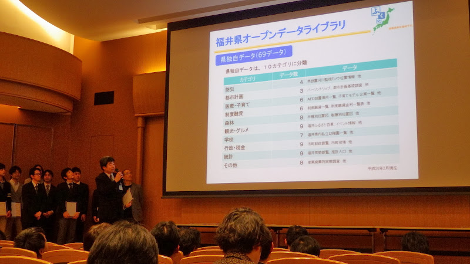 | ||
■ スポンサー賞
IBMスマーター・シティ賞（賞金3万円）
| 作品番号 | 作品名 | 応募者名 |
| a021 | 「宇多津劇場」の観光情報 | 高木治夫 |
| a022 | 「宇多津劇場」の観光情報 | |
| a023 | 「宇多津劇場」の観光情報 | |
| a024 | 奈良なび | |
| a025 | 奈良バスなび | |
| a026 | 奈良バスなび | |
| a028 | 古墳情報 | |
| a029 | 「ご当地なび」の古墳情報 | |
| a030 | 「ご当地なび」の古墳情報 | |
| a031 | 「みささぎナビ」の防災情報 | |
| a032 | 「みささぎナビ」の防災情報 | |
| a033 | 「みささぎナビ」の防災情報 | |
| a034 | 「みささぎナビ」のトイレ情報 | |
| a035 | 「みささぎナビ」のトイレ情報 | |
| a036 | 「みささぎナビ」のトイレ情報 | |
| a037 | 羽曳野市、藤井寺市周辺の観光情報 | |
| a038 | 「みささぎナビ」の観光情報 | |
| a039 | 羽曳野市、藤井寺市周辺の観光情報 | |
| a042 | 歩く宇治観光の道路バリアー情報 | |
| a043 | 歩く宇治観光の道路バリアー情報 | |
| a044 | 歩く宇治観光の道路バリアー情報 | |
| a045 | 「宇治なび」の宇治公園オープン情報 | |
| a046 | 「宇治なび」の宇治公園オープン情報 | |
| a047 | 「宇治なび」の宇治公園オープン情報 | |
| a048 | 京都観光のトイレ情報 | |
| a049 | 京都観光のトイレ情報 | |
| a050 | 京都観光のトイレ情報 | |
| a051 | 京都の地下鉄のエレベータ入り口情報 | |
| a052 | 「ご当地なび」京都の地下鉄のエレベータ入り口情報 | |
| a053 | 「ご当地なび」京都の地下鉄のエレベータ入り口情報 | |
| a054 | 京都の緊急医療機関情報 | |
| a055 | 京都の緊急医療機関情報 | |
| a056 | 「ご当地なび」京都の緊急医療機関情報 | |
| a057 | 「花なび」京都の今咲いている花情報 | |
| a058 | 「ご当地なび」花なび | |
| a059 | 「ご当地なび」花なび | |
| a060 | 「京都なび」なう | |
| a061 | 「ご当地なび」なう | |
| a062 | 「ご当地なび」なう |
| ■審査員コメント CC BY-NCでのデータ提供と同時にアプリケーションの提供がなされていること、京都、宇治、奈良、羽曳野、藤井寺、宇多津といった様々な地域の様々なデータを扱っていること、「ご当地なび」などは観光タクシーの運転手やシニア方も含めデータ更新されていることを評価しました。 |
||
| 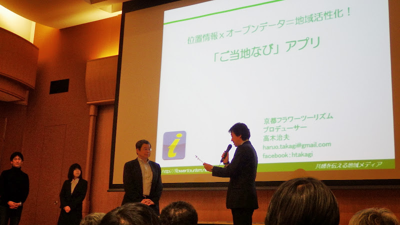 | ||
日本マイクロソフト賞（賞金3万円）
| 作品番号 | 作品名 | 応募者名 |
| a107 | 次世代統計利用システム・イエローページ | 松澤有三 |
| ■審査員コメント ユニークな着眼点での統計データの活用アイデアが具現化されており、実用性も高く便利である。またLODの技術が有効に活用されている。 |
||
| 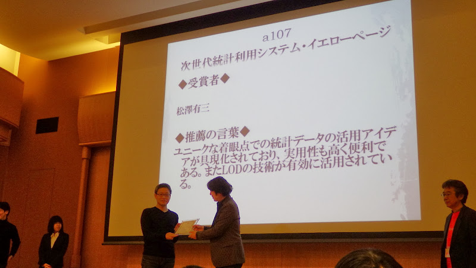 | ||
goo（賞金3万円）
| 作品番号 | 作品名 | 応募者名 |
| d012 | 歴史的農業環境閲覧システム | 岩崎亘典、デイビッド・スプレイグ |
| ■審査員コメント 明治時代初期に作成された地図と、現在の道路や鉄道、河川などの地図情報が重ねられ、土地利用の変化や地形の変容などを分りやすく見ることができます。ポータルサイト「goo」が提供する「goo地図」でも、江戸時代の切絵図や、明治40年の地図などを公開しています。場所の広がりだけでなく時間軸を加えることで、その土地に対しての新しい発見や一層の興味を利用する人に提供できていると思います。 |
||
| 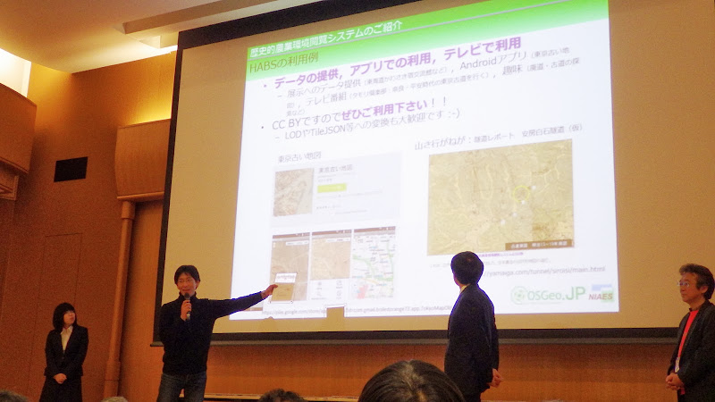 | ||
ヒューマンセントリック賞（富士通）（賞金3万円）
| 作品番号 | 作品名 | 応募者名 |
| a064 | はこだてMap+ ～まちあるきで発見！おすすめ観光コース～ | 公立はこだて未来大学 高度ICT演習観光系プロジェクト |
| ■審査員コメント 函館の学生さん達が自分たちの街の観光案内アプリを作成しています。 こんなアプリが増えたら各地に行くのが楽しくなります。 データを公開することに対する効果を気にしている人に地元を愛する気持ちやアプリの完成度と合わせて次の点を評価しています。 ①LODチャレンジ2012の応募作品(i-033,d-055,056,058, a-029)を活用していること ②iPhoneアプリとして誰もが使える形で提供していること |
||
| 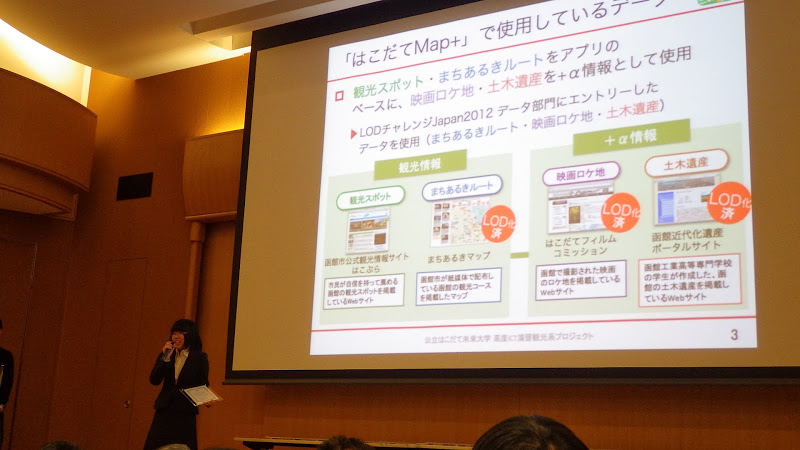 | ||
データクリエータ賞（賞金3万円）
| 作品番号 | 作品名 | 応募者名 |
| d078 | 横浜市公衆トイレ位置情報 | 松本豊 |
| d080 | 横浜ランドマークタワーをのぞむMAP | |
| a111 | 横浜市営地下鉄乗降者数Map | |
| a113 | 保育所入所児童数ピボットレポート |
| ■審査員コメント 横浜市のデータセットを多数作成され、それらを用いて多数のアプリケーションを作成されてきた一連の取り組みを高く評価致します。また、これまでにLinkData.orgに公開されてきたデータやアプリケーションは多くのユーザから評価され再利用されており、私たちが理想とするデータクリエータ像に最も近い方として表彰させて頂きます。今後も多くの有用なデータやアプリケーションを創出して頂けることに期待しております。 |
||
| 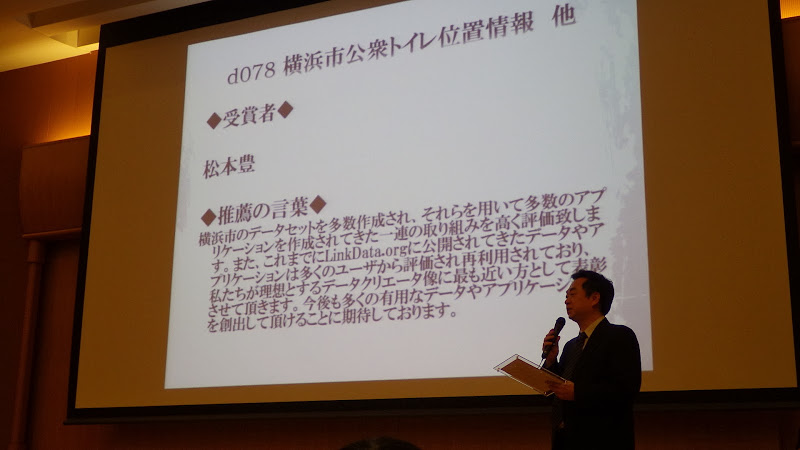 | ||
■ データ提供パートナー賞
CiNii賞（賞金3万円）
| 作品番号 | 作品名 | 応募者名 |
| a008 | CiNii Chart | 井ノ上靖 |
| ■審査員コメント シンプルなUIでCiNiiのデータの新たな見せ方を提案して頂きました。何かと何かを比較するという可視化手法は他のオープンデータにも適用できると思いますので、今後の展開に期待します。 |
||
| 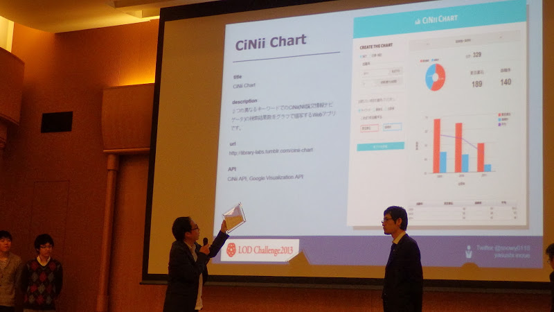 | ||
公益財団法人横浜市芸術文化振興財団賞（賞金3万円）
| 作品番号 | 作品名 | 応募者名 |
| b002 | SPARQL Timeliner | 上田洋, 小林巌生, 大林勇人, 東修作 |
| ■審査員コメント 当財団の横浜アートLODに対応し、イベント開催日や場所を分かりやすく表示することができ、そのままWebページの一部として利用できること、汎用性の高いツールであることを評価しました。 |
||
| 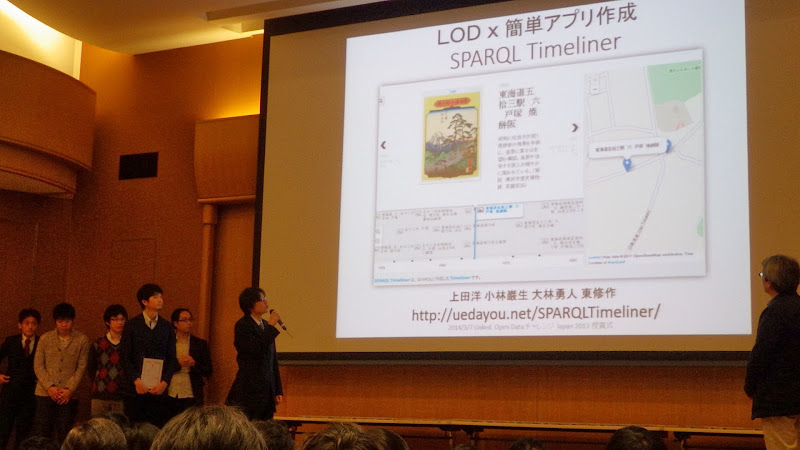 | ||
I-Scoverプロジェクト賞（賞金3万円）
| 作品番号 | 作品名 | 応募者名 |
| a007 | ツンデレ！論文キーワードクイズ | 五味弘 |
| ■審査員コメント 電子情報通信学会の文献検索システム I-Scover の特徴であるメタデータを良く活用しつつ、誰でも楽しめるクイズという形態のアプリケーションにまとめた発想力が素晴らしい。 |
||
| 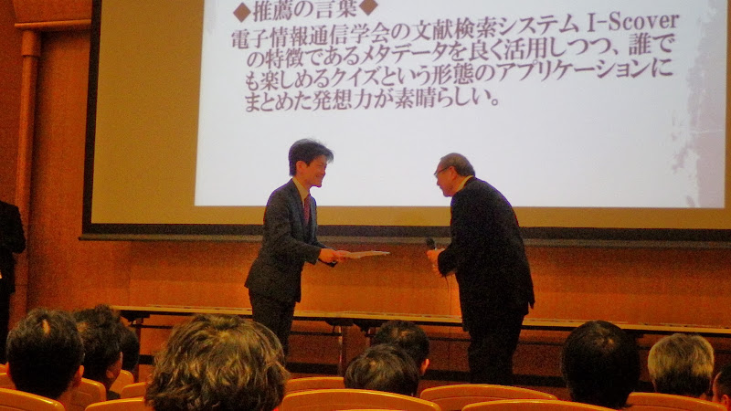 | ||
アイデア無限賞（賞金3万円）
| 作品番号 | 作品名 | 応募者名 |
| v008 | トイレ危険地帯 | 尾上洋介、芦田恵大 |
| ■審査員コメント 一番最初にトイレ情報を公開し、思い入れのあるデータですが、新たな視点での活用が新鮮でした。同じデータでも、まったく違った用途に使われることにオープンデータの本質を見たような気がします。 |
||
| 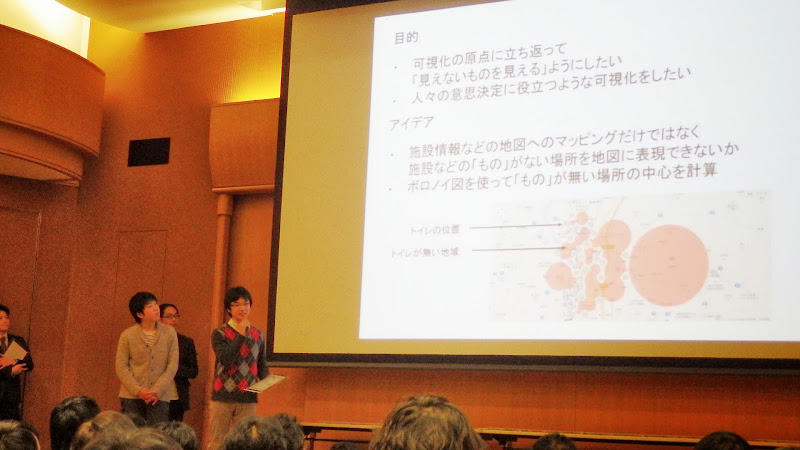 | ||
Statistics Japan賞（賞金3万円）
| 作品番号 | 作品名 | 応募者名 |
| a107 | 次世代統計利用システム・イエローページ | 松澤有三 |
| ■審査員コメント 統計の名称や統計表の種類が分からなくても興味のある事項に関する統計情報を簡単に得られるという点で、統計利用の裾野を大きく広げることに貢献していただけるものと考え、選定いたしました。また、本作品は次世代統計利用システムで提供している統計ＡＰＩ機能を効果的に活用しており、今後のＡＰＩ機能の本格運用（対象統計の拡充）を踏まえたさらなる利便性の拡大が期待されます。 |
||
| 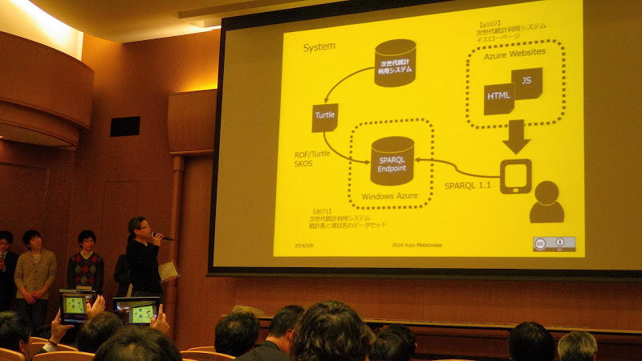 | ||
■ 基盤提供パートナー賞
NTTコミュニケーションズ賞（賞金3万円）
| 作品番号 | 作品名 | 応募者名 |
| a082 | 富岳３７７６景投稿サイト | 高口 大樹 |
| ■審査員コメント 山梨県と静岡県及びナイトレイ社との共同施策により、多くの人が撮った富士山の画像をオープンデータとして撮影地点と連動して公開し、これらの取り組みが、各メディアにもとりあげられるなど、国内外で注目度の高い取り組みとなっている。また、NTTコミュニケーションズが提供するパブリッククラウド「Bizホスティング Cloudn」をご利用され、オープンデータをクラウドサービス上で活用した先進的な事例としても評価したい。 |
||
| 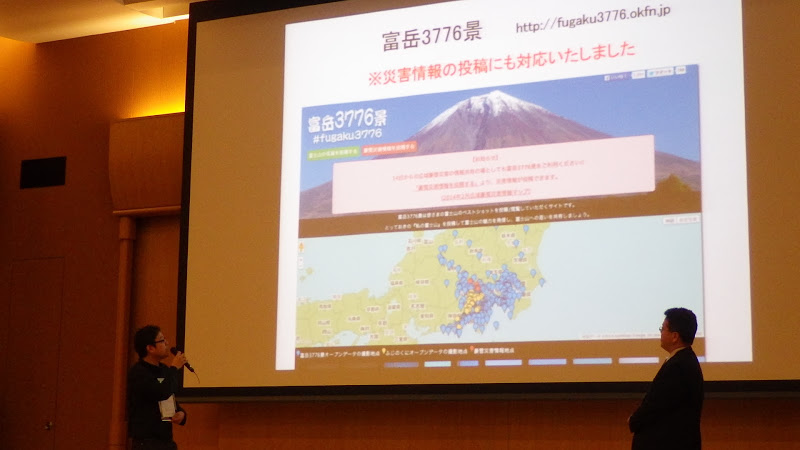 | ||
Remote Testkit賞（賞金3万円）
| 作品番号 | 作品名 | 応募者名 |
| a101 | AQMAP | 田中五月 |
| ■審査員コメント AQMAPはふじのくにオープンデータカタログを活用した水辺環境の改善を図るスマートフォンアプリを提供しています。弊社はインターネットを通じて社会貢献をサポートする「緑のgoo」を提供していますが、水辺環境の問題の見える化で改善アクションを促すAQMAPの理念に共感し、本賞を贈りたいと思います。また今後のご活動をスマートフォンアプリ検証サービス「Developers AppKitBox- Remote TestKit」もサポートしたいと思います。 |
||
| 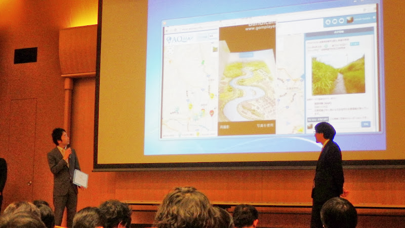 | ||
アプリクリエータ賞（賞金3万円）
| 作品番号 | 作品名 | 応募者名 |
| v003 | 大阪市工業推移の可視化 | 和田康宏 |
| ■審査員コメント 大阪市の公共データを活用して工業推移データが分かりやすく可視化されており、インタラクティブに操作できる点が優れたビジュアライゼーションアプリケーションであると評価させて頂きました。このように統計情報を分かりやすく可視化することは、今後のデータジャーナリズム等においても求められる技術であると思われます。今後もその能力を活かしたアプリクリエータとしてのご活躍に期待いたします。 |
||
| 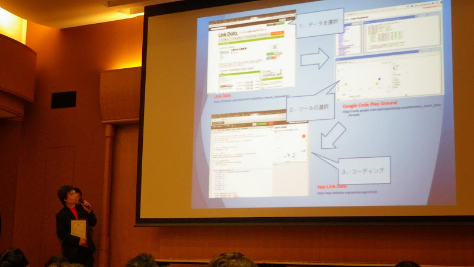 | ||
＊本件連絡先
LODチャレンジ実行委員会 事務局
〒252-0882 神奈川県藤沢市遠藤5322
慶應義塾大学環境情報学部 萩野研究室内
lod-challenge@sfc.keio.ac.jp
開催の主旨・概要については、下記プレスリリースをご参照ください。
- Linked Open Data チャレンジ Japan 2013 作品募集開始のお知らせ
http://lod.sfc.keio.ac.jp/blog/?p=1624 - Linked Open Data チャレンジ Japan 2013 表彰予定賞及び賞金額のお知らせ
http://lod.sfc.keio.ac.jp/blog/?p=1848
Linked Open Data チャレンジ Japan 2013 受賞結果発表（速報）
プレスリリース
2014年3月7日
報道関係者各位
LODチャレンジ実行委員会
Linked Open Data チャレンジ Japan 2013 受賞結果発表のお知らせ（速報）
LODチャレンジ実行委員会（所在：慶應義塾大学環境情報学部萩野研究室、実行委員長：慶應義塾大学環境情報学部教授 萩野 達也)は、2013年10月1日から2014年1月6日まで作品募集を行なった Linked Open Data チャレンジ Japan 2013 （以下、LODチャレンジ2013）の受賞作品を厳正な審査に基づいて発表します。
また、本日（2014年3月7日 15:00-17:30）、セマンティックWebコンファレンス2014内にて開催されたLODチャレンジ2013授賞式において、アプリケーション部門、データセット部門、アイディア部門、ビジュアライゼーション部門、基盤技術部門の各部門表彰に加えて、Platinumスポンサー賞、データ／基盤 提供パートナー賞、審査員特別賞の各賞の表彰を行なったことを報告します。
なお、表彰式の模様や、審査員コメントなどをまとめた詳細報告を後日掲載いたします。
■部門賞
アプリケーション部門
| 授賞名 | 作品番号 | 作品名 | 応募者名 |
| 最優秀賞 (賞金額20万円) |
a108 | リモートでちょっと川の様子見てくる | チームFGL |
| 優秀賞 (賞金額10万円) |
a105 | 疾患コンパス | 古崎晃司，山縣友紀，加藤敦丈，今井健，大江和彦，溝口理一郎 |
データセット部門
| 授賞名 | 作品番号 | 作品名 | 応募者名 |
| 最優秀賞 (賞金額15万円) |
d028 | ねじLOD | 江上周作，清水宏泰，藤井章博 |
| 優秀賞 (賞金額10万円) |
d063 | 復興目標LOD | 白松俊，中原陽子，大囿忠親，新谷虎松 |
アイディア部門
| 授賞名 | 作品番号 | 作品名 | 応募者名 |
| 最優秀賞 (賞金額10万円) |
i055 | メイド・イン「地元」～「地域愛」と「オープンデータ」を活用した地域活性化～ | メイド・イン「地元」開発チーム |
| 優秀賞 (賞金額7万円) |
i008 | 通勤情報を可視化することによる通勤問題解決 | オープンデータで通勤問題解決プロジェクト（仮称）
木田和海，大林勇人，板垣真太郎，小副川健，浅野優，年岡晃一 |
ビジュアライゼーション部門
| 授賞名 | 作品番号 | 作品名 | 応募者名 |
| 最優秀賞 (賞金額10万円) |
v004 | Journalism Hacks! 2013 - あなたはどこで人生の最期を迎えたいですか？ | データジャーナリズム・キャンプ2013 Hチーム |
| 優秀賞 (賞金額7万円) |
v017 | レシピの材料の可視化 | 高野克己 |
基盤技術部門
| 授賞名 | 作品番号 | 作品名 | 応募者名 |
| 最優秀賞 (賞金額15万円) |
b011 | GeoNLP | GeoNLP開発チーム（代表：北本朝展） |
| 優秀賞 (賞金額10万円) |
b002 | SPARQL Timeliner | 上田洋, 小林巌生, 大林勇人, 東修作 |
■審査員特別賞
| 授賞名 | 作品番号 | 作品名 | 応募者名 |
| 公共LOD賞 (賞金額5万円) |
d002 | 横手市一般会計決算 | 福田雄輔 |
| d003 | 横手やきそば暖簾会加盟店 | 高橋智子 | |
| d004 | 市報よこて記事タイトル | 高橋司 | |
| d005 | 横手市文化財 | 佐藤克彦 | |
| d006 | 横手市笹川スポーツ財団チャレンジデー参加実績 | 大坂智実 | |
| d007 | 横手市AED設置場所 | 大坂智実 | |
| d009 | 横手市子育て関連施設 | 小松健 | |
| d015 | 横手市消火栓 | 鈴木稔 | |
| d017 | 横手市の朝市 | 高橋智子 | |
| d018 | 横手市農産物直売所 | 高橋智子 | |
| d019 | 横手市にこにこレシピ | 高橋智子 | |
| i002 | 笹川スポーツ財団チャレンジデーとオープンガバメント | 大坂智実 | |
| i013 | アプリを利用したデータ標準化とカタログ化 | 大坂智実 | |
| a006 | 横手市×混雑度 マッシュアップMAP | 大坂智実 | |
| チャレンジデー賞 (賞金額5万円) |
d030 | 大阪市の施設情報・防災情報のLOD | Linked Open Dataハッカソン関西，大阪市 |
| 学生奨励賞 (賞金額5万円) |
d084 | カクテルレシピRDF | 竹原潤一 |
| 学生奨励賞 (賞金額5万円) |
d043 | 明石高専の行事予定 | 井谷武史、新井イスマイル |
| d049 | 明石高専のシラバス | 中田季利、新井イスマイル | |
| d050 | 明石高専の時間割 | 泉将之、平嶋洋大、松田裕貴、新井イスマイル | |
| a087 | かんたんしらばす for ANCT | 泉将之 | |
| ライフサイエンス賞 (賞金額5万円) |
d064 | UTProt RDF Platform: ~ タンパク質の機能と構造のためのSPARQLエンドポイント集 ~ | 込山悠介, 番野雅城, 鑓水優行, 清水謙多郎 |
| d065 | UTProt Image: ~ アプリや教材として使える生体高分子画像データベース ~ | 鑓水優行, 込山悠介, 清水謙多郎 | |
| a095 | UTProt Galaxy: ~ 創薬のためのタンパク質のリガンド結合部位予測ツール生成パイプライン ~ | 番野雅城, 込山悠介, 清水謙多郎 | |
| i043 | UTProt: ~ LODと機械学習を組み合わせた創薬のパラダイムシフト ~ | 込山悠介, 番野雅城, ガル・サード, 鑓水優行, 植木快 | |
| 環境LOD賞 (賞金額5万円※) |
d074 | Radiation - LOD: 放射線モニタリングデータのGeoSPARQLエンドポイント | 小島 功, 田中 良夫, 中村 章人, 的野 晃整 |
| データカタログ賞 (賞金額5万円※) |
d047 | ふじのくにオープンデータカタログ | 静岡県 |
| ベストファシリテータ賞 (賞金額5万円) |
i021 | Code for Japan | 関 治之 |
| LOD推進賞 (賞金額5万円) |
d010 | 公共施設情報(建物，消防署，福祉施設，病院，等) | 小林 茂 |
| d011 | UDCT 取組情報(下水道，鉄道) | ||
| d021 | 国民体育大会情報 (第45回～第68回) | ||
| d069 | 近隣の医院情報(世田谷・桜) | ||
| i011 | 公共施設情報(建物，消防署，福祉施設，病院，等)の活用 | ||
| i012 | 意欲的な取組情報の活用 | ||
| i015 | 国民体育大会情報 (第45回～第68回)の活用 | ||
| i046 | 近隣の医院情報の活用 | ||
| a005 | 日本の大学 | ||
| a010 | 公共施設情報(世田谷地区の図書館)の閲覧 | ||
| a011 | 公共施設情報(図書館，消防署，等)の都道府県別分布 | ||
| a012 | 意欲的な取組情報(下水道，鉄道)の閲覧 | ||
| a020 | 国民体育大会情報 (第45回～第68回)の閲覧 | ||
| a098 | 近隣の医院情報(世田谷・桜)のRDF化と閲覧 | ||
| a099 | 近隣の医院情報(世田谷・桜)の活用(SPARQL利用例) | ||
| ベストプレゼンテーション賞 (賞金額5万円) |
i053 | かいけつエキスプレス | OKPU LODプロジェクト(菊井玄一郎、但馬康宏、齋藤美絵子） |
| 子育てライフ賞 (賞金額5万円) |
a081 | かなざわ育なび.net | 横浜市金沢区役所 （石塚 清香） |
| オープンデータ推進賞 (賞金額5万円) |
d038 | 福井県オープンデータライブラリ | 福井県 |
※賞金については受賞者がご辞退されています
■スポンサー賞
| 授賞名 | 作品番号 | 作品名 | 応募者名 |
| IBMスマーター・シティー賞 (賞金額3万円) |
a021 | 「宇多津劇場」の観光情報 | 高木治夫 |
| a022 | 「宇多津劇場」の観光情報 | ||
| a023 | 「宇多津劇場」の観光情報 | ||
| a024 | 奈良なび | ||
| a025 | 奈良バスなび | ||
| a026 | 奈良バスなび | ||
| a028 | 古墳情報 | ||
| a029 | 「ご当地なび」の古墳情報 | ||
| a030 | 「ご当地なび」の古墳情報 | ||
| a031 | 「みささぎナビ」の防災情報 | ||
| a032 | 「みささぎナビ」の防災情報 | ||
| a033 | 「みささぎナビ」の防災情報 | ||
| a034 | 「みささぎナビ」のトイレ情報 | ||
| a035 | 「みささぎナビ」のトイレ情報 | ||
| a036 | 「みささぎナビ」のトイレ情報 | ||
| a037 | 羽曳野市、藤井寺市周辺の観光情報 | ||
| a038 | 「みささぎナビ」の観光情報 | ||
| a039 | 羽曳野市、藤井寺市周辺の観光情報 | ||
| a042 | 歩く宇治観光の道路バリアー情報 | ||
| a043 | 歩く宇治観光の道路バリアー情報 | ||
| a044 | 歩く宇治観光の道路バリアー情報 | ||
| a045 | 「宇治なび」の宇治公園オープン情報 | ||
| a046 | 「宇治なび」の宇治公園オープン情報 | ||
| a047 | 「宇治なび」の宇治公園オープン情報 | ||
| a048 | 京都観光のトイレ情報 | ||
| a049 | 京都観光のトイレ情報 | ||
| a050 | 京都観光のトイレ情報 | ||
| a051 | 京都の地下鉄のエレベータ入り口情報 | ||
| a052 | 「ご当地なび」京都の地下鉄のエレベータ入り口情報 | ||
| a053 | 「ご当地なび」京都の地下鉄のエレベータ入り口情報 | ||
| a054 | 京都の緊急医療機関情報 | ||
| a055 | 京都の緊急医療機関情報 | ||
| a056 | 「ご当地なび」京都の緊急医療機関情報 | ||
| a057 | 「花なび」京都の今咲いている花情報 | ||
| a058 | 「ご当地なび」花なび | ||
| a059 | 「ご当地なび」花なび | ||
| a060 | 「京都なび」なう | ||
| a061 | 「ご当地なび」なう | ||
| a062 | 「ご当地なび」なう | ||
| 日本マイクロソフト賞 (賞金額3万円) |
a107 | 次世代統計利用システム・イエローページ | 松澤有三 |
| goo賞 (賞金額3万円) |
d012 | 歴史的農業環境閲覧システム | 岩崎亘典，デイビッド・スプレイグ |
| ヒューマンセントリック賞（富士通） (賞金額3万円) |
a064 | はこだてMap+ ～まちあるきで発見！おすすめ観光コース～ | 公立はこだて未来大学 高度ICT演習観光系プロジェクト |
| データクリエータ賞 (賞金額3万円) |
d078 | 横浜市公衆トイレ位置情報 | 松本豊 |
| d080 | 横浜ランドマークタワーをのぞむMAP | ||
| a111 | 横浜市営地下鉄乗降者数Map | ||
| a113 | 保育所入所児童数ピボットレポート |
■データ提供パートナー賞
| 授賞名 | 作品番号 | 作品名 | 応募者名 |
| CiNii賞 (賞金額3万円) |
a008 | CiNii Chart | 井ノ上靖 |
| 公益財団法人横浜市芸術文化振興財団賞 (賞金額3万円) |
b002 | SPARQL Timeliner | 上田洋, 小林巌生, 大林勇人, 東修作 |
| I-Scoverプロジェクト賞 (賞金額3万円) |
a007 | ツンデレ！論文キーワードクイズ | 五味弘 | アイデアは無限賞（鯖江） (賞金額3万円) |
v008 | トイレ危険地帯 | 尾上洋介、芦田恵大 |
| Statistics Japan賞 (賞金額3万円) |
a107 | 次世代統計利用システム・イエローページ | 松澤有三 |
■基盤提供パートナー賞
| 授賞名 | 作品番号 | 作品名 | 応募者名 |
| NTTコミュニケーションズ賞 (賞金額3万円) |
a082 | 富岳３７７６景投稿サイト | 高口 大樹 |
| Remote TestKit賞 (賞金額3万円) |
a101 | AQMAP | 田中五月 |
| アプリクリエータ賞 (賞金額3万円) |
v003 | 大阪市工業推移の可視化 | 和田康宏 |